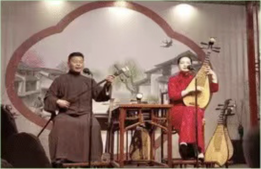
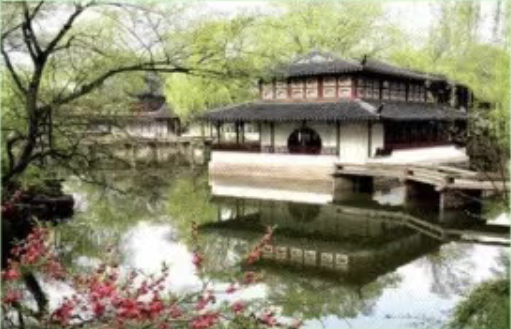

苏州评弹是苏州地区特有的曲艺形式，以说唱结合的方式表演，内容多取材于历史故事、民间传说和古典文学。评弹表演通常由一位或两位艺人使用三弦、琵琶等乐器伴奏，以吴语方言演唱，其唱腔优美，曲调悠扬，深受当地民众和游客的喜爱。评弹不仅是一种娱乐方式，也是苏州文化的重要组成部分，承载着苏州的历史和文化记忆。

苏州园林游是苏州的传统习俗，尤其在春季和秋季，苏州的园林如拙政园、留园等，都会迎来众多游客。园林游不仅是为了欣赏园林的美景，更是为了体验苏州园林的意境和文化。游客们在园林中漫步，可以感受到江南园林的精致与和谐，欣赏到亭台楼阁、小桥流水的美景，同时也能了解到园林背后的历史故事和文化内涵。
苏州端午节赛龙舟是当地一项重要的传统习俗，每年端午节期间，苏州的金鸡湖、太湖等水域都会举行龙舟比赛。赛龙舟不仅是一项体育活动，也是苏州端午节的重要文化活动之一。比赛时，各支队伍的龙舟在水面上激烈角逐，锣鼓喧天，观众们则在岸边呐喊助威，场面热闹非凡。赛龙舟不仅展现了苏州人民的团结协作精神，也寄托了人们对健康和平安的祈愿。